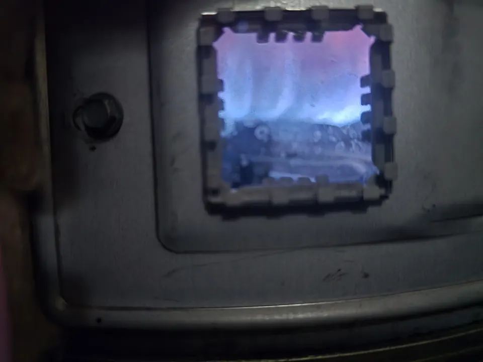

If your water heater is no longer keeping up, making unusual noises, leaking, or has stopped working altogether, we can help. From annual tank water heater maintenance to complete replacement, Angle Stop Plumbing is ready to restore your hot water quickly and efficiently.
Schedule Conventional Water Heater Service Today!
Expert Service for Electric & Gas Tank Water Heaters
Traditional water heaters remain one of the most common systems found in homes and businesses because they are dependable, cost-effective, and available in a range of sizes. At Angle Stop Plumbing, we specialize in servicing and installing both electric tank water heaters and gas tank water heaters.

Our services include:
- Conventional electric water heater service, repair, and installation
- Conventional gas water heater service, repair, and installation
- Annual water heater maintenance
- Tank flushing and sediment removal
- Leak diagnosis and repair
- Thermostat and heating component replacement
- Water heater replacement and new system installation
Whether your system needs a simple repair or a full upgrade, we provide honest recommendations based on your unit’s condition, age, and performance.
Conventional Water Heater Repair
A malfunctioning tank-style water heater can affect your comfort, daily routine, and utility costs. If you notice signs of trouble, prompt repair can often prevent more serious damage.
Common signs you may need traditional water heater repair include:
- No hot water
- Water that does not stay hot
- Rust-colored hot water
- Strange noises coming from the tank
- Water leaking around the base of the unit
- Low hot water pressure
- Rising energy bills
- Pilot light or burner issues on gas units
We diagnose issues quickly and perform the repairs needed to restore safe, reliable hot water.
Electric Tank Water Heater Services
Electric water heaters are a popular option for many homes because they are efficient, reliable, and widely available. If your electric unit is not heating properly or is showing signs of wear, Angle Stop Plumbing can inspect the system and recommend the right solution.
Our electric water heater services include:
- Heating element replacement
- Thermostat repair and replacement
- Electrical connection checks
- Tank maintenance and flushing
- New electric water heater installation
- Replacement of aging or inefficient units
Gas Tank Water Heater Services
Gas water heaters are known for fast recovery times and strong performance, especially in households or properties with high hot water demand. Our team provides complete gas water heater service in Murfreesboro and Middle Tennessee, including repairs, maintenance, and installation.

Our gas water heater services include:
- Burner and pilot light diagnostics
- Thermocouple replacement
- Gas control valve service
- Venting and connection inspection
- Tank flushing and maintenance
- New gas water heater installation
- Gas water heater replacement
Gas systems should always be serviced by trained professionals to help ensure safe operation and proper performance.
Annual Tank Water Heater Maintenance
Routine maintenance is one of the best ways to protect your water heater and extend its service life. Over time, sediment can collect inside a traditional tank, reducing efficiency and increasing wear on the unit.
Annual water heater maintenance helps:
- Improve efficiency
- Maintain consistent hot water
- Reduce sediment buildup
- Catch small issues early
- Extend equipment lifespan
- Lower the risk of unexpected breakdowns
If your goal is to get the most out of your current unit, yearly service is a smart investment.
New Conventional Water Heater Installation
If your current unit is beyond repair or no longer meeting your hot water needs, we provide professional tank water heater installation for both electric and gas systems. We help you choose the right size and type of water heater based on your property’s layout, household size, water usage, and budget.
A new traditional water heater may be the right choice if:
- Your current unit is aging or unreliable
- Repairs are becoming more frequent
- You are running out of hot water too quickly
- Your energy bills are increasing
- Your tank is leaking
- You want a more efficient replacement
Our installation process is designed to be smooth, efficient, and built around long-term performance.
Why Choose Angle Stop Plumbing?
Angle Stop Plumbing is committed to providing high-quality plumbing solutions with dependable service and honest workmanship. Customers in Murfreesboro and throughout Middle Tennessee choose us for their water heater needs because we offer:
- Experienced water heater repair and installation
- Service for both electric and gas tank water heaters
- Prompt, professional scheduling
- Clear communication and practical recommendations
- Residential and commercial plumbing expertise
- Reliable support for repairs, maintenance, and replacement
Serving Murfreesboro & Middle Tennessee
We proudly serve customers in Murfreesboro and the immediate Middle Tennessee market, providing expert service for traditional tank-style water heaters, including both electric and gas systems. Whether you need fast repair, preventive maintenance, or a new installation, Angle Stop Plumbing is ready to help.
Schedule Conventional Water Heater Service
For trusted conventional water heater service, repair, and installation in Murfreesboro and Middle Tennessee, turn to Angle Stop Plumbing. We provide expert solutions for traditional electric and gas tank water heaters, helping keep your home or business supplied with dependable hot water.